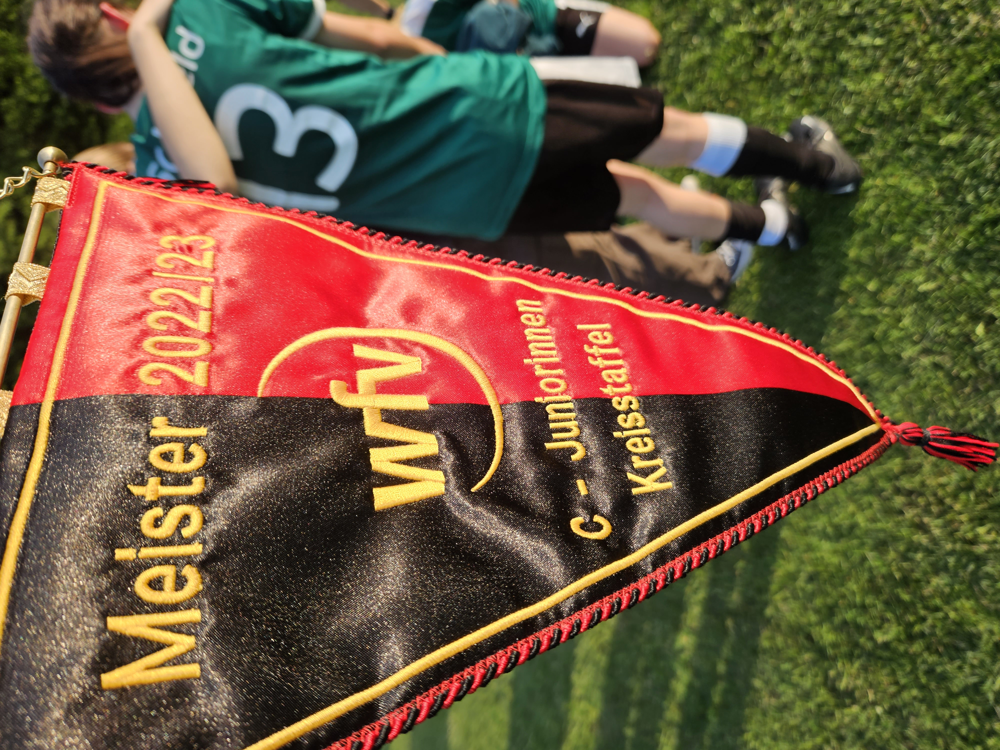

ABI U15 C Juniorinnen gegen SpVgg Gammesfeld
Am 01.07.2023 fand in Gammesfeld im Hohenloher Land unser letztes Staffelspiel in der Saison 2022/2023 statt. Nach dem Gewinn des Unterländer Meisterwimpel ging es in diesem Spiel noch in der gemeinsamen Staffel Hohenlohe-Unterland um die Vizemeisterschaft zwischen unseren beiden Mannschaften. Mit 10 Juniorinnen davon mit Charlotte und Julia 2 Mädels von den ABI U13 D Juniorinnen ging es über die A6 nach Gammesfeld. Umziehen,Warm Up,Ansprache vom Trainer und schon waren die Mädels mitten im Spiel. Voll konzentriert und mit schönen Passkombinationen und Zusammenspiel lagen wir mit 2 Treffern von Marie nach 15 Minuten Spielzeit mit 2:0 in Front.
Die verdiente Führung gab den Mädels die nötige Ruhe um weiterhin das Spiel zu dominieren. Leider verletzte sich Charlotte in der ersten Halbzeit so daß wir mit einer 2:0 Führung aber eine Spielerin weniger in die zweite Halbzeit starteten. Gammesfeld setzte nun alles auf eine Karte und so entwickelte sich ein gutes Spiel auf hohem Niveau. Mit Teamgeist und einer hervorragenden Abwehrreihe mit Anja, Asya, Lotta hielten wir dem Druck stand und konnten nach dem Abpfiff gemeinsam den 2:0 Sieg und die Vizemeisterschaft feiern.
Besser kann die Saison nicht zu Ende gehen und nun freuen wir uns auf unser Saisonabschlussfest und die verdienten Ferien/Urlaub sowie die neue Saison 2023/2024.
Es spielten für ABI Anja-Asya-Charlotte-Julia-Linda-Lisa-Lotta-Marie-Mia-Yana begleitet durch ihren Trainer Ralph